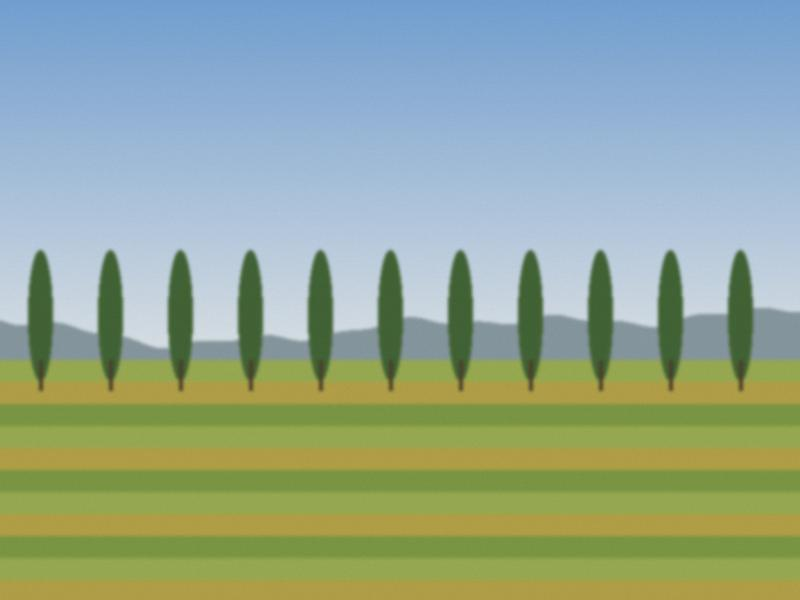
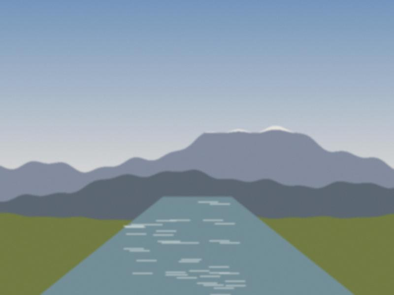
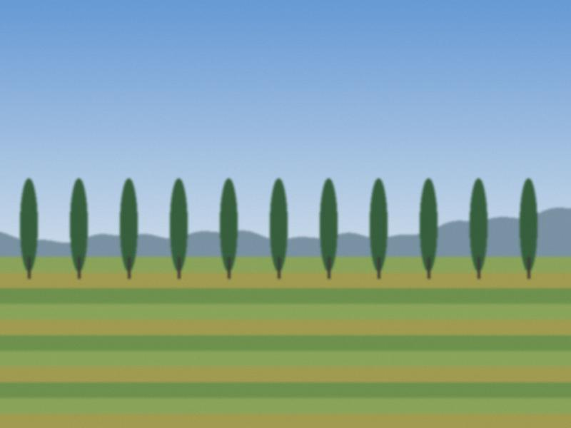

Autumn on the lower Chu, a thin year for money and a fat year for rice.

A short note about water and about a paper from the Zone's government.
The summer of 2021: the lower Chu had half its water and the paddies had to choose.

A pensioner's lesson in how to store a harvest, in case the world requires it again.
From 1971 to 2009 I was the man who walked the paddies in August with a bag of seed samples. Some numbers I keep in my head.
